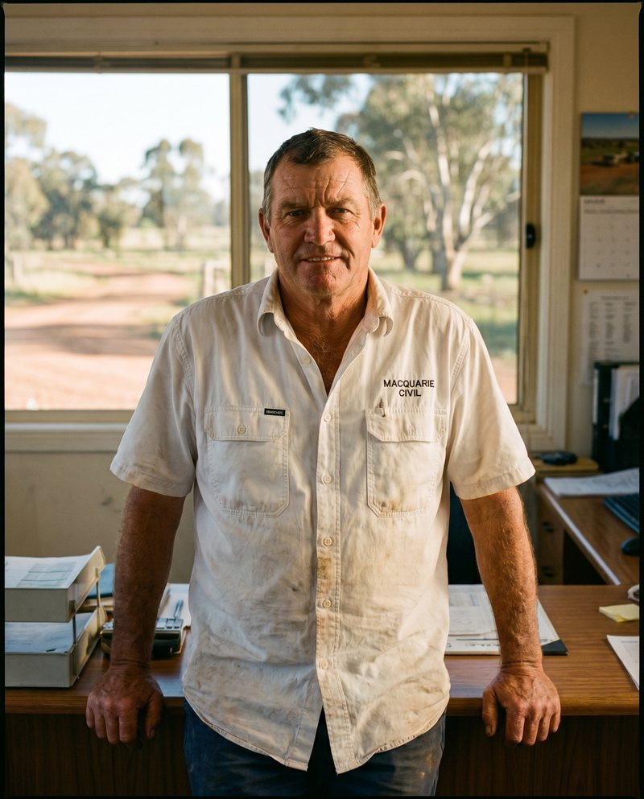

Specialist focus on the unique mechanics of civil and commercial construction.
Jobpac was built for construction and we built our consultancy for the same audience. We know subbie claims, retentions, plant costing, stage billing, and JV multi-entity reporting from inside the businesses that run them — not from a vendor's marketing deck.
Where industry knowledge changes the answer.
Most ERP consultants will configure what you ask for. We'll tell you what you should be asking for, because we know the operational realities the configuration has to survive.
That shows up in retention treatment, progress claim formats, head-contract vs subcontract billing logic, plant cost-recovery models, and how a JV reports back to its parents. The differences are small in isolation. They compound across a year of project closeouts.
- Subbie claim processingRCTI generation, retention release tracking, statutory declarations, payment claim/payment schedule timing under the Security of Payment Acts.
- Retentions, ledger to ledgerTracked correctly on both sides — what you owe subbies and what's withheld from you by the head contractor.
- Progress billingStage claims, schedule of values, milestone billing, and reconciliation against the head contract.
- Plant & equipment costingInternal hire rates, plant ledger maintenance, cost recovery to projects, idle-time tracking.
- Multi-entity / JV structuresInter-entity charges, JV reporting back to parent entities, consolidated and standalone P&L.
- Variations & contract value trackingApproved variations vs pending vs disputed — visible at the project line, not buried in spreadsheets.
The businesses we know best.
Most of our clients fit one of these profiles. If yours doesn't, the conversation might still be worth having.
Tier-2 commercial builders
$50m–$500m turnover, multiple concurrent projects, growing pains around forecast accuracy and project-level margin visibility.
Civil contractors
Roads, bridges, utilities, earthworks. Heavy plant, day-rate hire, stage-based billing, complex retention release timing.
Fit-out & refurb specialists
Fast turn-over jobs, high subbie density, tight margin discipline, lots of variations and partial claims to track.
Family-owned regional builders
Decades of operating know-how, leaner finance teams, modernising off legacy systems or spreadsheet-driven processes.
Joint ventures & alliances
Multi-entity reporting back to parent companies, inter-entity charges, consolidated and standalone P&L for each partner.
Multi-entity construction groups
Holding company structures with operating subsidiaries, intercompany trading, consolidated reporting, separate ABNs.
Four steps. No surprises. No bait‑and‑switch.
Every Buoy engagement runs the same way — fixed scope, senior consultant, full transparency end‑to‑end.
We listen first.
A no-cost call. We learn your current Jobpac setup, what's hurting most, and what's already worked. You're talking to the senior consultant who'd actually do the work — not a sales person reading off a script.
You get a fixed-scope proposal.
Deliverables, timeline, price, and the named senior consultant who'll lead the engagement — in writing, within a week. No “T&E to be confirmed.” The price is the price.
Senior consultant on the keys.
The person on the proposal does the work. Not a junior. Not a partner who hands it down. Weekly written status, risks called out the week they emerge — not the week before go-live.
Your team owns it when we leave.
Documentation, hands-on training, and a structured handover — written so your team can run it long after we're gone. Optional ongoing same-day support after handover, but you're never locked in.

They speak the language. When we discussed retention treatment, they didn't need the construction-finance crash course — they came with the answer. Sixteen years in this industry shows up in every conversation.
Why specialism matters.
What people usually ask.
Do you only work with civil contractors, or commercial builders too?
Both. The mechanics overlap heavily — subbie claims, retentions, progress billing, project-level P&L, plant costing are common across civil and commercial. The specifics differ (more plant in civil, more variations in fit-out) but the consultant skill is the same.
What size of business do you typically work with?
Most clients are between $20m and $500m turnover — mid-market construction businesses with one finance function. Smaller and we're usually overkill. Larger and there's typically an internal team that needs different kinds of help. Either way, the discovery call tells us quickly.
Do you handle JV / multi-entity reporting?
Yes — it's one of our specialty areas. Joint ventures, parent-subsidiary reporting, inter-entity charges, consolidated and standalone P&L. Most ERP consultancies hand-wave this; we've configured it dozens of times and know where the edge cases live.
Are you familiar with Security of Payment Act timing for claims?
Yes. Payment claim service dates, payment schedule response windows, statutory declarations, the lot. We configure Jobpac so the system supports the legal requirements rather than fighting them — including the differences between NSW, Vic, Qld, WA, and NZ regimes.
Do you work with regional businesses outside the capital cities?
Yes. We're based in Sydney, Melbourne, Brisbane, and Auckland, and we travel anywhere in AU/NZ for on-site work. Regional family-owned builders are some of our favourite clients — deeply experienced operators modernising legacy finance functions.
Can you help with plant cost recovery and internal hire rates?
Yes. Plant ledger setup, internal hire rate cards, recovery to projects, idle-time tracking, replacement-cost analysis. It's one of the most under-used parts of Jobpac at most civil contractors we audit — the configuration is usually the bottleneck, not the software.
Want a Jobpac partner who actually knows civil?
Most consultancies will service any ERP and any sector. We do one ERP, in one industry, and we've done it for sixteen years. Tell us about your business.
- Construction & civil — only
- Subbie claims, retentions, plant costing, JV reporting
- On-site from Sydney, Melbourne, Brisbane, Auckland